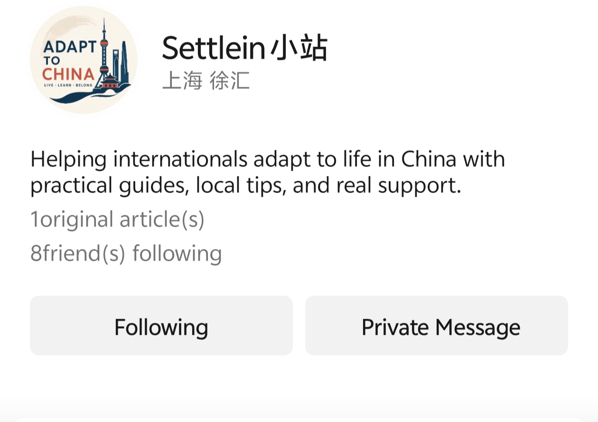

AVAILABLE NOW · SHANGHAI
Open Home Cleaning →
Home cleaning
Find the usual booking routes, copy Chinese search terms and an enquiry message, and check scope, price, supplies, and extra charges.
Choose the stage closest to you.
Plan documents, housing, payments, healthcare, and your first month.
Open the moving path → 02 · ARRIVALHandle registration, your local contact, phone access, and a payment backup.
Open the arrival checklist → 03 · FIRST MONTHChoose Work, Student, or Other for the setup that fits you.
Choose your route → 04 · ONE TASK IS STUCKGet help with a local service, Chinese app, or practical phone call.
See local-help options →Guides and finders are free, with no account required.
Tell me what you are trying to do in China. You can describe the situation in your own words. Your request can be organized by need, timing, and urgency so the next step is easier to identify.
Practical, English-first routes for local services in China. Each page explains what to search, what to say, and what to confirm before you book.
Find the usual booking routes, copy Chinese search terms and an enquiry message, and check scope, price, supplies, and extra charges.
One service at a time: Home Cleaning is the first Daily Help page. New tasks will be added only after this flow is tested with real users.
Choose what brought you here. You will go directly to a free guide, finder, or the most relevant next step—no account required.
Ask practical questions, share experience, and meet other newcomers.

Read longer practical guides and new website updates without leaving WeChat.
Ask questions and share what worked for you.
Current QR valid until 28 September 2026. If it expires, add martinzhong26 and say “community group”.
Open QR full size →See explainers, updates, and community stories.
The principle: no newcomer should have to figure everything out alone.
Still stuck? See personal support →An independent newsletter by Louis Bleyen sharing on-the-ground observations on China’s economy, business, investing, and geopolitics for international readers.
Independent external resource · Views are the author’s own.
Apps, payments, taxis, trains, takeout and the paperwork, checked against 2026 rules.
FreeChoose a halal directory or a vegetarian and vegan directory, with Chinese names, map actions and practical cautions.
Free · practical directoryWhich apps work in English, what it really costs, and the traps two friends hit in Shanghai.
FreeAn expanded hospital finder and a concise guide to the typical outpatient visit.
FreeShort lessons, mistakes, and near-misses from other newcomers, now inside Daily Guides.
Free · part of Daily GuidesGet one specific local-service task handled, use Shanghai Pet Support for dog walking or feeding, ask practical questions for seven days, or request one ordinary Chinese phone call.
Paid support · clear scope